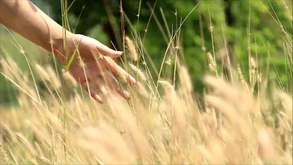

Redefining Tissue Engineering & Regenerative Medicine.
At Voxvacs, we believe the next generation of biotechnology will come from bringing disciplines together, not keeping them apart. Preservation science, biomaterials, bioprinting, and computational biology are often treated as separate fields. We see them as parts of one larger system for building meaningful regenerative solutions.
Our vision is to create a company that can connect these capabilities in a way that is scientifically strong, commercially practical, and built for long-term impact. We want Voxvacs to be a place where research can move with greater speed, where ideas can be developed with more depth, and where innovation can be translated more effectively into products, partnerships, and real applications.
Founded in India with a global outlook, Voxvacs is built on the belief that high-quality biotechnology can be both ambitious and efficient. We want to contribute to a future where regenerative innovation is more connected, more scalable, and more accessible to the people and institutions building what comes next.
Over time, our aim is for Voxvacs to become more than a biotech company. We want it to become a platform that helps enable the future of biological innovation itself.

High-fidelity biocompatible materials designed for 3D bioprinting. We create the scaffolding for the future of organ regeneration.
Decoding the code of life. We use advanced algorithms and scRNA-seq analysis to visualize and predict cellular behavior.
Next-gen preservation. Stabilizing biological structures at the molecular level for transport and long-term viability.
The future of vision. Developing ocular solutions that merge organic tissue with synthetic durability.
CEO & Co-founder
Visionary leader driving the integration of biotechnology disciplines and scaling biotech innovation globally.
Chief Scientific Officer
Leading bioprinting research with 15+ years in tissue engineering.
Head of Bioinformatics
Pioneering data-driven solutions in molecular simulation and genomics.
Director of Operations
Scaling biotech solutions from lab to market with precision and vision.
Whether you are a student, founder, researcher, or investor, tell us what you want to build and we will help architect the science behind it.